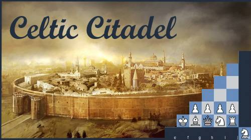

Persian Chess is an evolved version of the traditional chess game, introducing a new design and fresh gameplay while staying connected to its historical roots. This variant changes the standard setup, offering players a different yet familiar experience that enriches the strategic possibilities of chess.
This variant of chess has been in development since 2006, involving years of research, design, and programming. The current engine is built in JavaScript, making it easily playable in web browsers and on mobile apps using Apache Cordova. The game and its Android app are Free and Open Source, inviting players and developers to enjoy and contribute.
Persian Chess was first playable in June 2006 on a 9×9 "citadel" board, though the early version was basic and buggy. After extensive rule refinement and several updates, the game saw its first stable release in 2013 under the name "Chess911." Feedback led to a rebranding, and by 2014 it was renamed to Persian Chess, better reflecting the theme and origins of the game.

The game features several sub-variants, each with its own unique theme:
Celtic Citadel
Princess
Egyptian Eye
Oriental Omega

Persian Chess is distinct from the "Mad Queen" (MQ) family of chess, such as the standard 8×8 FIDE chess, where the queen is the dominant piece. Instead, Persian Chess introduces additional compound pieces, the **Princess** and the **Fortress**, which provide new tactical possibilities and enrich the gameplay. These pieces are integral to the game, not treated as "fairy pieces," but as natural extensions of traditional chess mechanics.
The game uses a 9×9 "perfect" board, designed to offer symmetrical start positions with the king in the central file. This layout eliminates the standard king-side and queen-side labels, instead using **Queen side** (left of the king) and **Princess side** (right of the king). The expanded board size leads to longer and more complex games, requiring careful planning and calculation in all phases of the game.

Why Play Persian Chess?
The goal of Persian Chess is to provide a fresh approach to chess while challenging players to go beyond rote memorization of standard openings. The unique pieces and expanded board offer new strategic options, making each game a test of creativity and skill. For players interested in deep positional play and complex calculations, Persian Chess offers an engaging experience that can help develop skills useful in standard 8×8 chess.
Whether you are a chess enthusiast or someone looking for a new challenge, Persian Chess offers a different perspective on the game, with longer opening lines, dynamic middle game play, and intricate endgames.

Enjoy playing Persian Chess, and may the new strategies and tactics help you gain a deeper understanding of the game. Have a good game!